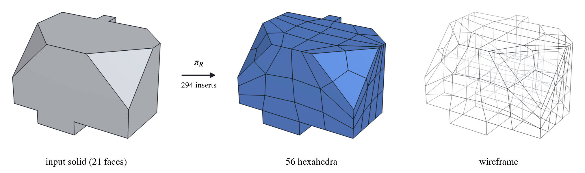

An agent that carves a 3D solid into brick-like blocks, one cut at a time, and gets better by studying its own successes.
Many engineering simulations, from stress in a bracket to flow through a channel, run best on meshes of hexahedra: six-sided, brick-like cells. The first step is to split the solid into a handful of well-shaped hexahedral blocks. Experts still do much of this by hand, and doing it automatically for general shapes is a long-standing open problem in mesh generation.
We treat it as a game: the agent edits the solid one step at a time, and only learns whether it succeeded at the very end, often after a few hundred moves.
The solid starts as a single cell. Each move inserts a vertex, an edge or a face, splitting cells apart. The game is won when every cell is a hexahedron that passes a quality check. The network reads the mesh's own connectivity, so one agent handles small and large solids alike.
For some solids a correct decomposition can be built directly: stacks of boxes, simple chamfers, extruded 2D meshes. Taking these apart step by step yields demonstrations, and the agent first learns by imitating them.
On new solids the agent tries many times and keeps the attempts that succeed in a growing archive of solutions. Retraining on that archive, round after round, steadily improves it. This loop is called expert iteration.
Each clip replays one successful attempt by the final agent on a solid it never saw in training. Cells fly apart as they become hexahedra, the camera circles the finished mesh, and the blocks settle back into the original shape.
Moves that only add a vertex are skipped in the clips, since they do not change the picture.

A large chamfered solid (left), the 56 hexahedra the agent splits it into (middle), and the same mesh as a wireframe (right). Every block follows the slanted faces, and the mesh is as well shaped as this solid allows.